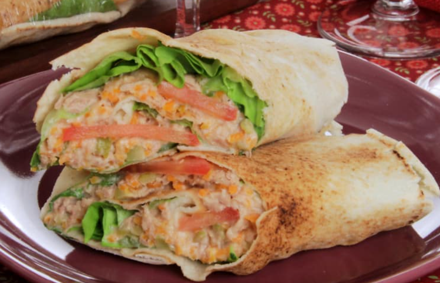

Delicioso e Fácil de Preparar!
Se você acha que não dá para fazer um doce delicioso com poucos ingredientes, veja o manjar prestígio! É uma sobremesa fácil e que vai agradar a todos!
Manjar prestígio saboroso
Tempo de preparo: 20min
Rendimento: 4 unidades
Nível de dificuldade: fácil
Ingredientes do wrap saudável de atum com salada
- 2 pães sírios
- 4 folhas de alface
- 1 tomate em rodelas finas
- 1 lata de leite condensado
- Sal a gosto
Creme
- 1 lata de atum sólido em conserva escorrido
- 1 xícara (chá) de azeitona verde picada
- 1 cenoura ralada
- 1 copo de requeijão cremoso light (200g)
Modo de preparo
Para o creme, em uma tigela, misture o atum, a azeitona, a cenoura e o requeijão. Assim, reserve. Em seguida, abra os pães sírios ao meio, formando 4 folhas de pão. Posteriormente, sobre cada folha de pão sírio, coloque uma folha de alface, rodelas de tomate e polvilhe com sal. Coloque uma porção do creme de atum e enrole como rocamboles. Imediatamente, embrulhe com filme plástico, apertando bem. Por fim, leve à geladeira até o momento de servir.